Web-Demo · Änderungen #43
0.9.6-rc1
T-Deck direkt bedienen
Veröffentlichung beauftragt. Diese Bilder zeigen das echte 320 × 240 Layout aus dem Firmware-Code mit simulierten Daten. Keine Hardwarefotos. Hardwareabnahme für diese Version offen; Privatchat, Bluetooth-Parallelbetrieb und Updates mit Datenerhalt sind noch auf dem Gerät zu prüfen.
- Große Kacheln und getrennte Trefferflächen.
- Listen wischen, Karte ziehen, links zurück.
- Nur explizites Senden; Tastatur und Trackball bleiben nutzbar.
- Ohne GPS-Fix ist Heimersheim nur Kartenansicht.
Bedienung · Release und Hardwarestatus · Web-Flasher 0.9.6-rc1
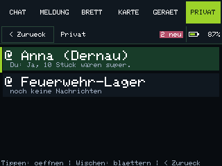
Privat: gespeicherte Kontakte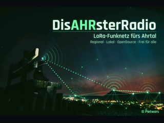
Bootmotiv
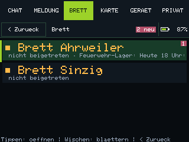
Bretter / Room-Server
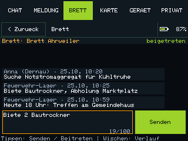
Brett: Beitreten und Aushang
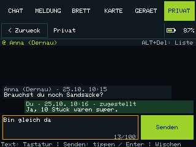
Direktnachrichten
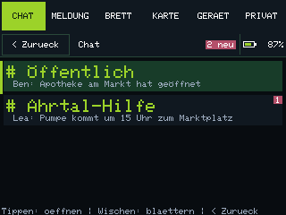
Chat: Kanaele und Kontakte
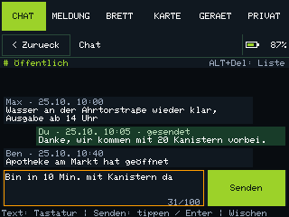
Chat mit Senden-Button
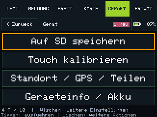
Weitere Geraeteaktionen
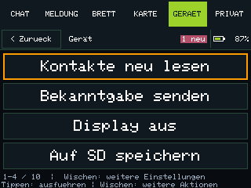
Geraeteaktionen
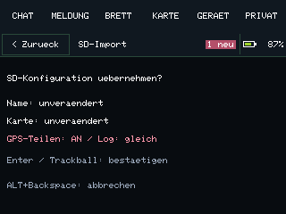
Geraeteinfo und Akku
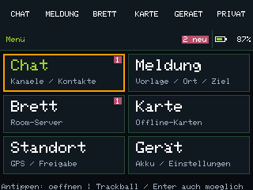
Hauptmenue
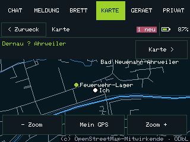
Karte: Detail
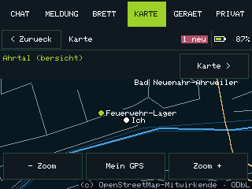
Offlinekarte
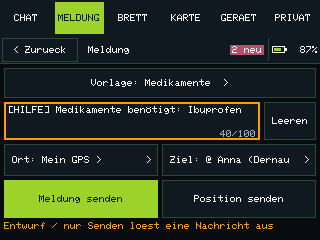
Schnellmeldung
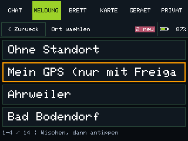
Ort waehlen
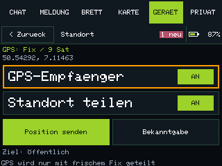
GPS und Standortfreigabe
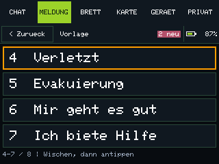
Vorlagen: weiterblaettern
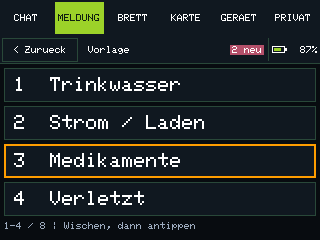
Vorlagen waehlen
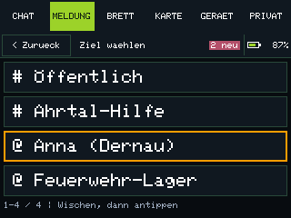
Empfaenger waehlenKartendaten © OpenStreetMap-Mitwirkende, ODbL. Vorschaukennzeichnung: standalone-test6.